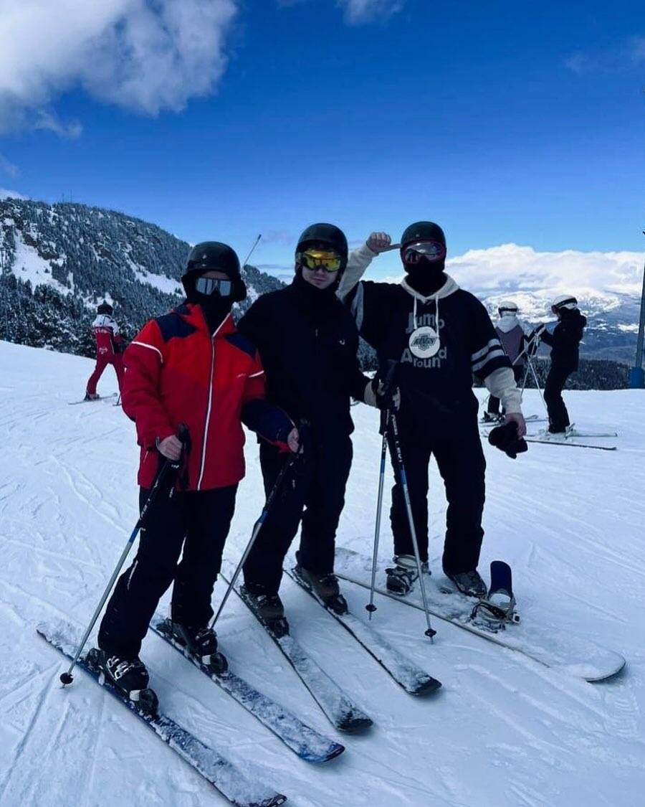
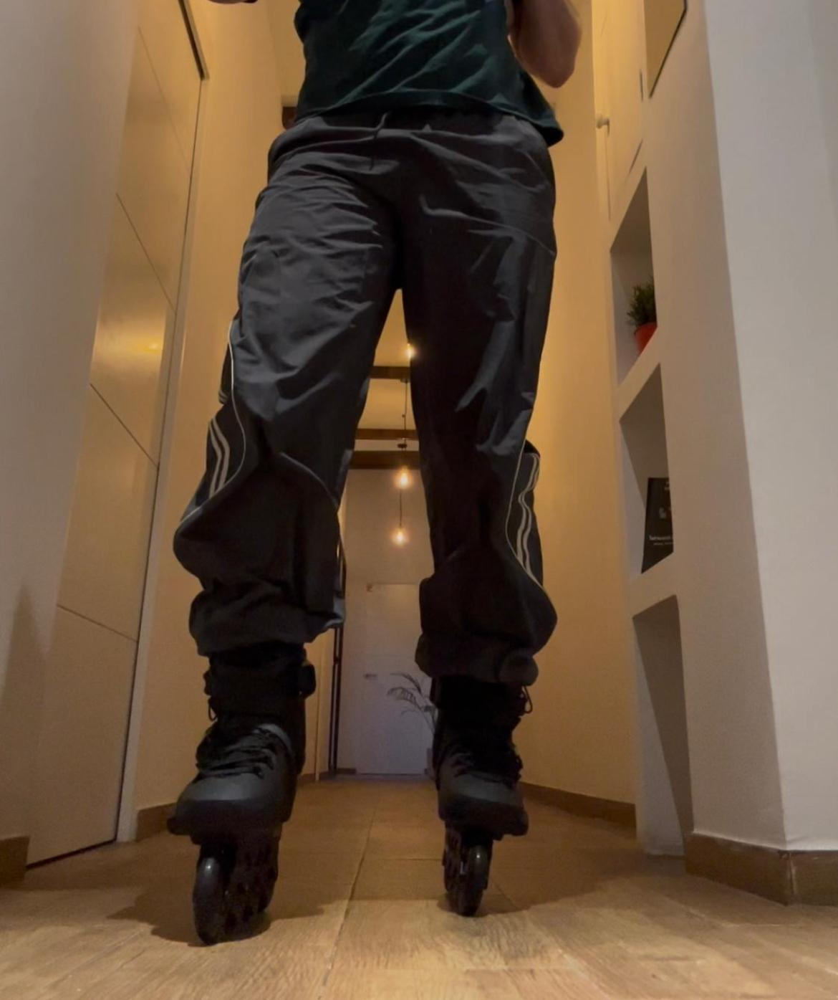
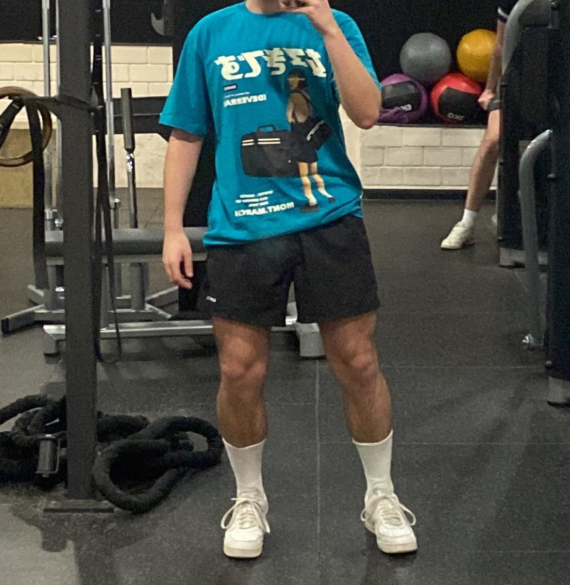

Físicos:
Mantenerse en forma siempre es una buena idea, es por eso que practico:
-
 Snowboard -
 Patinaje -
 Gimnasio
Mantenerse en forma siempre es una buena idea, es por eso que practico:
Tan importante es el ejercicio físico como el mental.
MENS SANA IN CORPORE SANO.Decimus Junius Juvenalis
Igual de importante como es mantenerse en buena forma (tanto física como mental) lo es tener ratos de desconexión. En esos momentos: